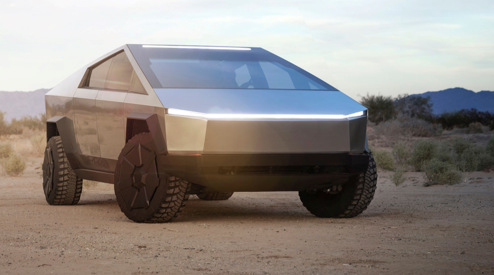

Elon Musk Tribute Page
Elon Musk's Life
Elon Reeve Musk was born in 1971 in South Africa. His father was an engineer and his mother was a model. His parents divorced when he was young. Elon went to live with his father, while the rest of his siblings went to live with his mother. Elon was bullied in school, and used his love of reading to withdraw from what he was going through. At the age of ten he was introduced to computers. He learned how to program at the age of twelve. Creating a game called Blastar, and sold it for $500.00. Musk and his brother, had planned on opening a video arcade near their school. The only thing stopping them besides their parents was acquiring a city permit, by an adult. At seventeen he moved to Canada, and would go to school at the Queen's University in Kingston, Ontario. This is where he met Justine Wilson. They would marry and have five sons together. They divorcing in 2008. After two years at the Queen's University, Elon transferred to the University of Pennsylvania. He graduated with a Bachelor of Science in Physics, as well as a Bachelor of Arts in Economics from the Wharton School. The two majors show the direction of Elon’s career would take, but it was physics that made the biggest impact on his thought process. “Physics is a good framework for thinking”, “Boil things down to their fundamental truths and reason up from there.” Elon was twenty-four years old when he moved to California to pursue a PhD in applied physics at Stanford University. The internet was exploding and Silicon Valley booming. Elon had was thinking about starting his own company. He left the PhD program after just two days. In 1995, with $28,000 and his younger brother Kimbal at his side. Elon started Zip2, a web software company. This would help newspapers develop online city guides. The company was purchased from Elon. He used his Zip2 money to create X.com. He wanted to shape the future of banking. X was merged with a company called Confinity and the resulting company came to be known as PayPal. Elon was fired from the company before it was bought by eBay.
After PayPal slipped away, Elon helped generate funding for an electric car startup called Tesla.

Tesla Model S
Tesla Cyber Truck

Elon Musk showing off the Model S
His interest in philosophy, science fiction, and fantasy novels is reflected in his sense of idealism and concern with human progress. He puts his efforts into working in the areas he has identified as crucial to our future, specifically renewable energy sources, and space colonization. With his work with PayPal, Tesla Motors, SolarCity, and SpaceX, he has defied critics and made advances in all three of these frontiers.